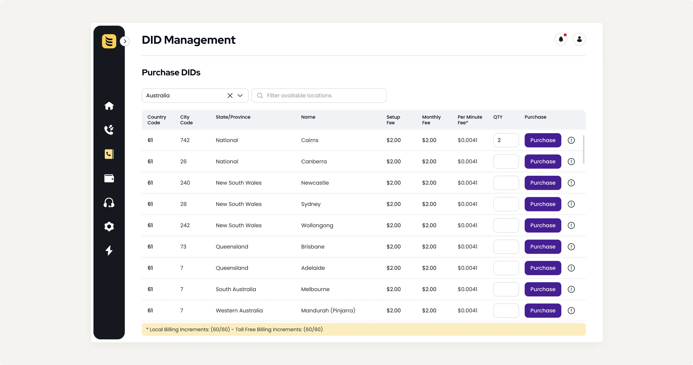
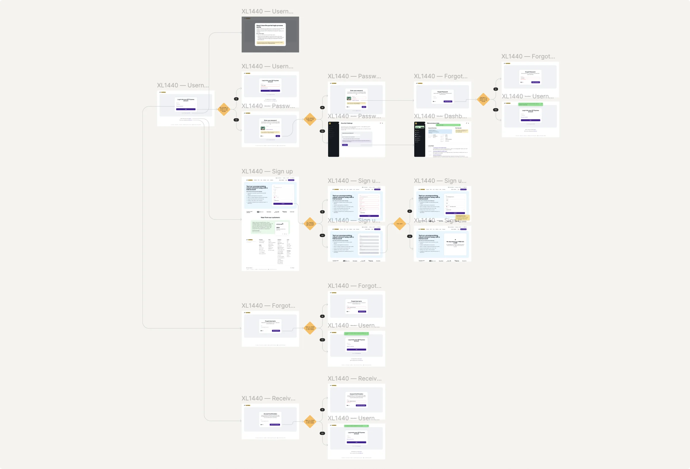
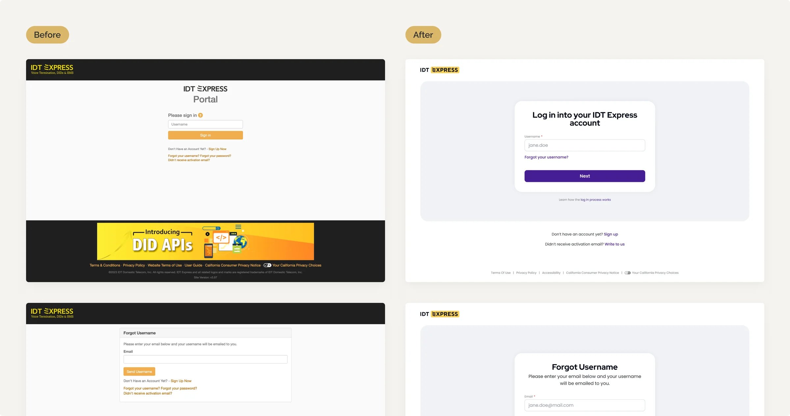
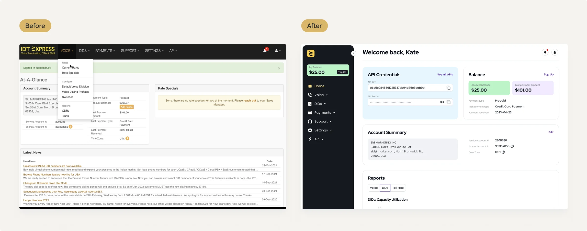
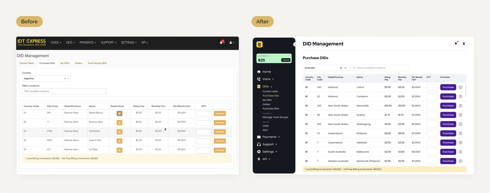

The IDT Express portal enables users to customize voice services to suit their particular requirements and modify them in real-time. Additionally, the self-service portal grants access to comprehensive call logs and usage reports, as well as phone number acquisitions for the B2B sector.
Improve the visual design and usability of the portal through a redesign.

I designed a new platform interface using a single component system that I had previously used to redesign the IDT Express website. This approach allowed me to maintain consistency while building new pages.

When logging in, users used to see all links in a row on the platform. I divided them into screens according to their intended use, to avoid overloading them with irrelevant information.

To enhance flexibility in navigation, I moved it to the side panel. I added icons to the menu items for quick visual identification of desired sections, I placed the API block on the first screen, as it is frequently used. In addition, I separated the balances from the summary, as it is a separate section of the platform with its own set of functions. Moreover, I increased the readability of the text by increasing the contrast to AAA level and the font size.

By creating a side navigation and placing the filters on one line, I removed the tabs and was able to increase the height of the table.
